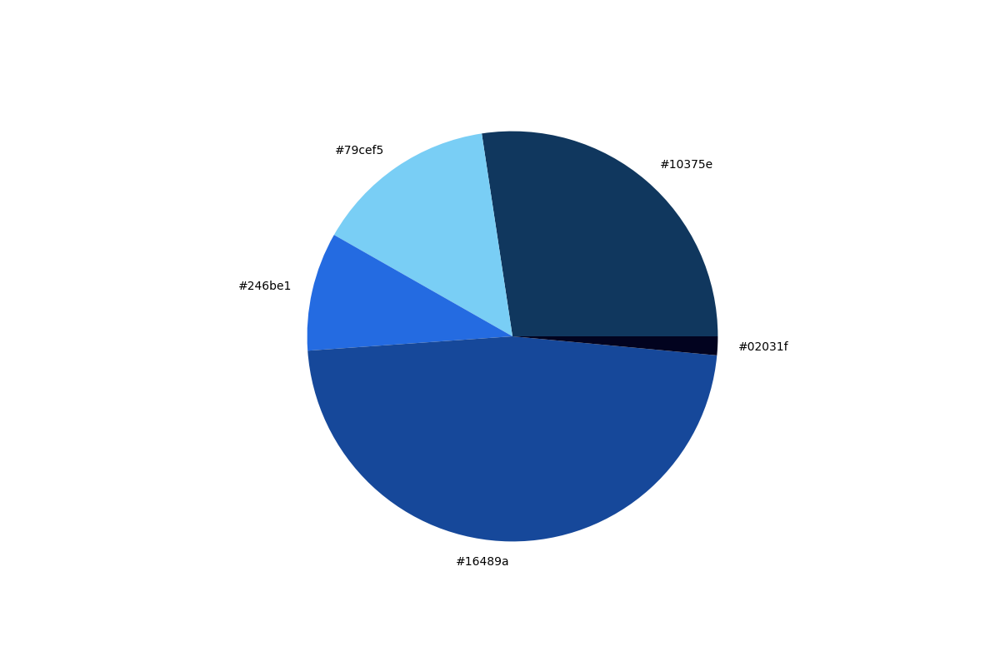

Portfolio
-
Color Analyzer - May 2023
A color analyzer created using Python, CV2, Matplotlib.pyplot, and KMeans from SKleanr.cluster
Uses the Kmeans algorithm to determine the 5 most used colors in an image and outputs the values in a piechart
-
Fashion Collection Color Analyzer - Work in progress
A color analyzer created using Python, BeautifulSoup, Selenium Webdriver, Matplotlib.pyplot, IO, urllib.request, ColorThief
Scope: when completed user will be able to pass in a link to a fashion collection (currently housed on Vogue's website: paywall is causing difficulty) the images are webscraped and passed into a function that gets the top 3 colors per image, at the end the output will contain the colors most used in the collection
Why? I love fashion and wanted to create a tool that will show users color trends in fashion collections they find interesting
-
Historic World Cup Home Team Analysis - May 2022
A program created using R
Developed to test a hypothesis that home teams during a World Cup performed better than the away team
Leveraged different machine learning algorithms like Linear Regression, Naive Bayes and Market Basket Analysis
Results showed that Market Basket Analysis showed the most insight in the play styles of different teams and how they would perform as the home and away team
-
Spotify Satire - November 2021

A website created using Javascript, HTML, CSS, Firebase and the Spotify API
Developed to be the antithesis of Spotify Wrapped: we wanted to make fun of people's music taste rather than celebrate them
Developed in a two person team